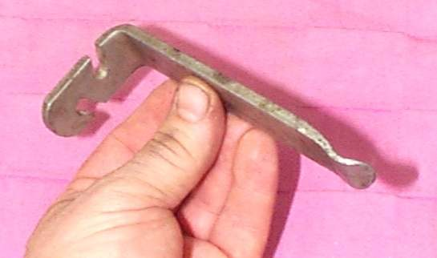

A new tube or a newly fitted tyre loses air within hours or days. Common causes are a tube pinched by a tyre lever, a spoke end or rough rim edge that cuts it, a leaking valve and a tube that is folded inside the tyre.
Is it safe to ride?
No. A flat or half-flat tyre is not safe. Do not ride on it.
Quick checks first
- Look at the pinch: two small slits side by side on the tube, which is a snake-bite.
- Check the valve with soapy water. Bubbles show a leak.
- Run a hand round the inside of the rim. Feel for a spoke end, rust or a sharp edge.
- Check the rim tape or strip is in place and covers every nipple.
Diagnose it step by step
1Does the tube have two small slits side by side?
- Yes: it was pinched. Either by a lever when the tyre was fitted, or by riding at low pressure. Replace the tube. Fit the tyre in small bites (Make a rounded tyre lever for fitting the last bead).
- No: go to step 2.
2Is there a hole on the inside of the tube, under the rim?
- Yes: a spoke end or nipple is cutting it. File the spoke end flat and fit new rim tape. Duct tape in a few wraps can work as a temporary rim strip. See Check and tighten spokes.
- No: go to step 3.
3Does soapy water on the valve show bubbles?
- Yes: tighten the valve core. If it still leaks, replace the core. A core that leaks in one stem often holds in another. See Check and replace a tyre valve.
- No: go to step 4.
4Is the tyre seated evenly, with the moulded line the same distance from the rim all round?
- No: let the air out, lubricate and refit. The valve must point toward the axle, not tilt.
- Yes: go to step 5.
5Was the tube patched?
- A patched tube is weaker. Replace the tube. Do not rely on a patch for a motorcycle tyre; see Repair a puncture in an inner tube.
Causes, most likely first
| Cause | How to confirm | Fix |
|---|---|---|
| Tube pinched at fitting | Two slits side by side | Replace the tube, refit slowly |
| Spoke end or rim edge cuts the tube | Hole on the inner side of the tube | File spoke ends, fit rim tape |
| Valve core leaks | Bubbles with soapy water | Tighten or replace the core |
| Tyre not seated | Uneven line on the sidewall | Lubricate, deflate and reseat |
| Tube folded or too big | Wrinkled tube inside tyre | Fit the right tube size |